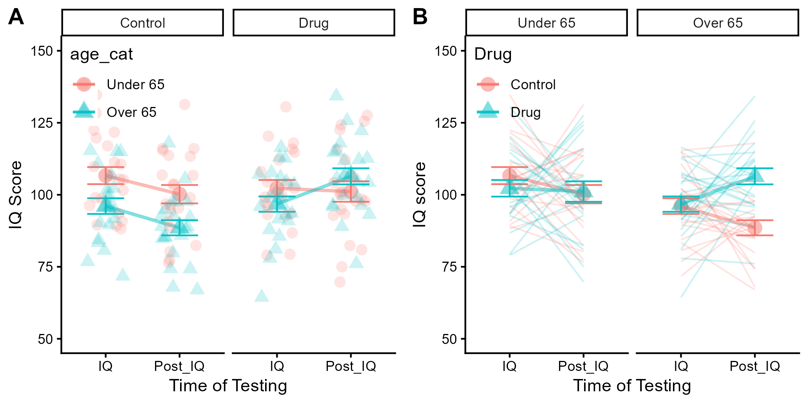
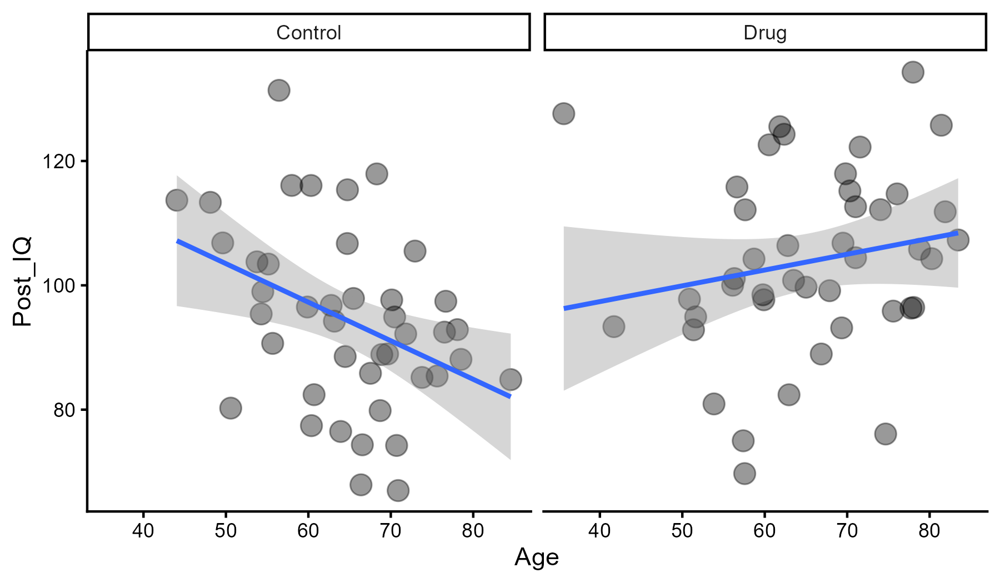
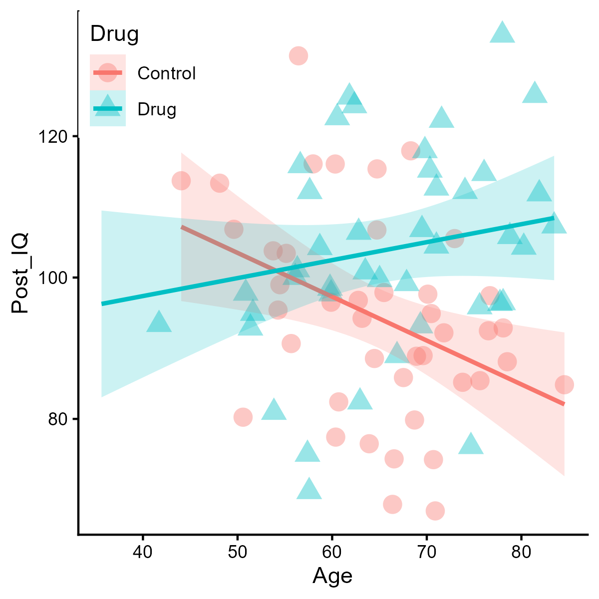

The purpose of the practical assignments that you have completed across the term was to provide you with all of the tools needed to execute a fictitious experiment. Now, you will integrate these skills to produce your final written assignment.
The final assignment should demonstrate your understanding of research methodology, document generation using Rstudio and competency using R code. The goal of this project should be to produce an output document that you could present as a “portfolio piece” in an academic (or other) context.
For this reason, please show code used to generate analyses as well as the results from those analyses. Hide code used to generate figures, but show the results (aka the high-quality images). Please submit a single .docx file that was generated through Rmarkdwon as your submission.
Introduction
The expected length of the introduction section is ~ 500 words. Make sure that you divide your ideas into paragraphs that each discuss a unique component of your study. The introduction section should be at least 5 paragraphs long, and should not be more than 10 paragraphs. We do not typically use subheading within the introduction section of an empirical article. You should introduce the articles that you have sourced throughout the practical assignments by describing what’s been done, what’s been found, and what these findings means. Use the past literature to provide rationale for the experiment that you are currently conducting.
In the final paragraph of the introduction section, you should explain the purpose of your paper (e.g., describe how you will be extending upon the findings that you’ve summarized so far). Make sure that you clearly explain all of the variables you will be using: The independent variable, the dependent variable, and the covariate.
Methods
Divide your methods into “participants”, “materials”, “procedure”, “statistical analyses” (or similar) subheadings. Explain transparently that you will be simulating data using Rstudio to demonstrate the theoretical study that you have designed. Describe the method for determining your sample size and the final number of participants you will simulate. Provide descriptions of the methods and procedure so that an new reader that is knowledgeable about experimental design and Rstudio would be able to recreate your simulated experiment exactly.
### Use code from Practical 4: # Set a consistent start point for "random" data generation# Makes it so the output will be consistentset.seed(123) # Can be any value. # Generate data. Specify the number of rows, number of variables, means for the columns, sd's for the columns, and the correlation between the columns.data <-rnorm_multi(n =85, vars =2, mu =c(65,100), sd =c(10,15), r =-0.3)# Rename the columns to represent your variables colnames(data) <-c("Age","IQ")head(data)
Age IQ
1 64.74322 90.80306
2 56.44198 93.49663
3 53.76554 121.72313
4 67.53304 101.96359
5 54.27693 98.64371
6 48.10980 122.44146
Do not worry about the length of your methods or results section, just take the space that you need to fully describe your experimental proceedings / findings.
Results
Divide your results section into subheadings that describe different statistical analyses. The results of the analyses should be printed in both versions of your submission. Center your figures and provide figure captions. Make sure that each figure has a label (e.g., Figure 1), and that each of the figures is referenced in-text.
Think about keeping your analysis strategy succinct and logical. You need to balance volume with importance - show you understanding of data storytelling by presenting the analyses clearly using simple, direct sentences. Think about the reader - make your series of outputs as easy to follow as possible.
Correlation Analysis
Analyze, interpret, discuss, and plot the continuous relationship between the covariate and the dependent variable (practical #4).
cor.test(data$Age,data$IQ)
Pearson's product-moment correlation
data: data$Age and data$IQ
t = -2.5503, df = 83, p-value = 0.0126
alternative hypothesis: true correlation is not equal to 0
95 percent confidence interval:
-0.45646873 -0.05988606
sample estimates:
cor
-0.2695696
One-Way Analysis
Explain, perform, graph, analyze, and interpret the transformation of the continuous covariate to a categorical variable (practical #5). Make sure that you are clear about the number of levels that you are using, and the rationale for this choice. Test whether there is a “basal” difference between the groups using the appropriate analysis (t-test or ANOVA) and interpret the results.
# Transform the continuous variable into categoriesdata$age_cat <-cut(data$Age,breaks =c(-Inf, 65, Inf), # cut pointslabels =c("Under 65", "Over 65")) # labelshead(data)
Age IQ age_cat
1 64.74322 90.80306 Under 65
2 56.44198 93.49663 Under 65
3 53.76554 121.72313 Under 65
4 67.53304 101.96359 Over 65
5 54.27693 98.64371 Under 65
6 48.10980 122.44146 Under 65
# Levigne's test for equity of variancesvar.test(data = data, IQ ~ age_cat)
F test to compare two variances
data: IQ by age_cat
F = 1.1772, num df = 41, denom df = 42, p-value = 0.6007
alternative hypothesis: true ratio of variances is not equal to 1
95 percent confidence interval:
0.6359244 2.1842525
sample estimates:
ratio of variances
1.177203
# A t.test when variances are not unequalt.test(data = data, IQ ~ age_cat, var.equal =TRUE)
Two Sample t-test
data: IQ by age_cat
t = 2.8695, df = 83, p-value = 0.005214
alternative hypothesis: true difference in means between group Under 65 and group Over 65 is not equal to 0
95 percent confidence interval:
2.462339 13.586680
sample estimates:
mean in group Under 65 mean in group Over 65
104.45180 96.42729
Factorial ANOVA
Compute, interpret, and graph the results of the factorial ANOVA. Make sure that you run ALL of the appropriate follow-up comparisons, and explain what the results of each analysis means. You can graph the same data multiple ways if that helps tell the story of the various comparisons. Each project will look different - focus on conveying your data in the way that makes the most sense given your design.
## Generate Final Dataset: set.seed(426)# Split your data frame into data frames corresponding to your levels of the categorized covaritae: Under_65 <- data[data$age_cat =="Under 65", ]Over_65 <- data[data$age_cat =="Over 65", ]# Randomly assign your independent variable to half the members of each group: Under_65$Drug <-c(rep("Control",21), rep("Drug",21))Over_65$Drug <-c(rep("Control",21), rep("Drug",22))# Split the data frame by the experimental groupsUnder_65_control <- Under_65[Under_65$Drug =="Control", ]Under_65_drug <- Under_65[Under_65$Drug =="Drug", ]Over_65_control <- Over_65[Over_65$Drug =="Control", ]Over_65_drug <- Over_65[Over_65$Drug =="Drug", ]# Create distributions of the proposed outcome after "intervention" (application of the IV)Under_65_control$Post_IQ <-rnorm(n =21, mean =100, sd =15)Under_65_drug$Post_IQ <-rnorm(n =21, mean =100, sd =15)Over_65_control$Post_IQ <-rnorm(n =21, mean =90, sd =10)Over_65_drug$Post_IQ <-rnorm(n =22, mean =100, sd =15)final_data <-rbind(Under_65_control,Under_65_drug,Over_65_control,Over_65_drug)head(final_data)
Age IQ age_cat Drug Post_IQ
1 64.74322 90.80306 Under 65 Control 115.36923
2 56.44198 93.49663 Under 65 Control 131.36582
3 53.76554 121.72313 Under 65 Control 103.77843
5 54.27693 98.64371 Under 65 Control 95.39799
6 48.10980 122.44146 Under 65 Control 113.34786
7 57.98470 105.23238 Under 65 Control 116.07211
# Aggregate your final data to check it out: knitr::kable(final_data %>%group_by(Drug,age_cat) %>%summarise(n=n(),mean=mean(Post_IQ),sd=sd(Post_IQ) ) %>%mutate(se = sd /sqrt(n)))
Drug
age_cat
n
mean
sd
se
Control
Under 65
21
100.20596
14.62407
3.191234
Control
Over 65
21
88.54052
12.04785
2.629057
Drug
Under 65
21
101.12417
16.27543
3.551591
Drug
Over 65
22
106.40972
13.09813
2.792530
# Switch to long-formlong_data <- final_data %>%mutate(ID =c(1:85)) %>%# Add an ID columnmelt(id.vars=c("ID","Drug","age_cat","Age"))head(long_data)
ID Drug age_cat Age variable value
1 1 Control Under 65 64.74322 IQ 90.80306
2 2 Control Under 65 56.44198 IQ 93.49663
3 3 Control Under 65 53.76554 IQ 121.72313
4 4 Control Under 65 54.27693 IQ 98.64371
5 5 Control Under 65 48.10980 IQ 122.44146
6 6 Control Under 65 57.98470 IQ 105.23238
# I'm making 2 graphs to show the same data two ways## You choose one way that makes the most sense given your design.A <- long_data %>%group_by(age_cat,Drug,variable) %>%summarise(n=n(),mean=mean(value),sd=sd(value) ) %>%mutate(se = sd /sqrt(n)) %>%ggplot(aes(x=variable,y=mean,colour=age_cat,shape=age_cat,group=age_cat))+geom_point(size=4,alpha=0.5)+geom_line(linewidth=1, alpha=0.5)+geom_errorbar(aes(x=variable,ymin=mean-se,ymax=mean+se),width=0.5)+geom_jitter(data = long_data,aes(x=variable,y=value),size=3,alpha=0.2,height=0,width=0.25)+facet_wrap(~Drug)+theme_classic()+theme(legend.position =c(0,1),legend.justification =c(0,1))+theme(legend.background =element_rect(fill="transparent"))+ylim(50,150)+labs(x="Time of Testing",y="IQ Score" )B <- long_data %>%group_by(age_cat,Drug,variable) %>%summarise(n=n(),mean=mean(value),sd=sd(value) ) %>%mutate(se = sd /sqrt(n)) %>%ggplot(aes(x=variable,y=mean,colour=Drug,shape=Drug,group=Drug))+geom_point(size=4,alpha=0.5)+geom_line(linewidth=1, alpha=0.5)+geom_errorbar(aes(x=variable,ymin=mean-se,ymax=mean+se),width=0.5)+geom_line(data=long_data,aes(x=variable,y=value,group=ID),alpha=0.2)+facet_wrap(~age_cat)+theme_classic()+theme(legend.position =c(0,1),legend.justification =c(0,1))+theme(legend.background =element_rect(fill="transparent"))+ylim(50,150)+labs(x="Time of Testing",y="IQ score" )# Arrange the two graphs side-by-side for easy viewing / comparison. panel <-ggarrange(A,B,labels=c("A","B"))# Save & call backggsave("graph_1.png",panel,height=3.5,width=7,dpi=300)knitr::include_graphics("graph_1.png")

# Run a 3-way ANOVA to analyze your variables: a <-anova_test(data = long_data, dv = value, within = variable, wid = ID, between =c(age_cat,Drug))get_anova_table(a)
There is a significant main effect of age (F (1,81) = 7.92, p = 0.006).
There is a significant interaction between age and drug treatment (F(1,81) = 7.64, p = 0.007).
There is a significant interaction between drug treatment and time of testing (F(1,81) = 6.81, p = 0.01).
Follow up pair-wise comparisons
## Always two ways to follow up: #1:a <- long_data %>%group_by(age_cat) %>%pairwise_t_test(value~Drug)tt(a)
age_cat
.y.
group1
group2
n1
n2
p
p.signif
p.adj
p.adj.signif
Under 65
value
Control
Drug
42
42
0.58300
ns
0.58300
ns
Over 65
value
Control
Drug
42
44
0.00155
**
0.00155
**
There was no effect of the drug on IQ scores for people that were under 65 (p = 0.58).
There was a significant effect of the drug treatment on IQ scores for people that were over 65 (p = 0.0016).
## Number 2: a <- long_data %>%group_by(variable) %>%pairwise_t_test(value~Drug)tt(a)
variable
.y.
group1
group2
n1
n2
p
p.signif
p.adj
p.adj.signif
IQ
value
Control
Drug
42
43
0.51400
ns
0.51400
ns
Post_IQ
value
Control
Drug
42
43
0.00383
**
0.00383
**
There was no difference in IQ scores between the experimental groups before treatment (i.e., at the first IQ measurement p = 0.51)
At the second IQ test, participants in the “Drug” group had higher IQ scores than participants in the control group p = 0.0039.
Linear Regression
Compute, interpret, and graph the results of a multiple regression where the continuous covariate is entered as the predictor with the independent variable entered as the moderator. Interpret the linear relationships between the continuous covariate and the dependent variable at each level of your experimental treatment condition.
So far, we’ve worked with categorized versions of the covariate. But this was based on a construct that exists on a continuous scale in the real world (e.g., age, in my case). Now, run a linear regression of model the continuous relationship at the different levels of your independent variable.
# Plot correlations between the continuous covariate and the DV for the two levels of your IVA <- final_data %>%group_by(Drug) %>%ggplot(aes(x=Age,y=Post_IQ)) +geom_point(size=4,alpha=0.4)+geom_smooth(method="lm")+facet_wrap(~Drug)+theme_classic()ggsave("graph_2.png",A,height=3.5,width=6,dpi=300)knitr::include_graphics("graph_2.png")

Side-by-side comparisons of continuous relationships at each level of the moderator.
# Be creative and choose a visual depiction that works for you! B <- final_data %>%group_by(Drug) %>%ggplot(aes(x=Age,y=Post_IQ,colour=Drug,fill=Drug,shape=Drug))+geom_point(size=4,alpha=0.4)+geom_smooth(method="lm",alpha=0.2)+theme_classic()+theme(legend.position =c(0,1),legend.justification =c(0,1))ggsave("graph_3.png",B,height=4,width=4,dpi=300)knitr::include_graphics("graph_3.png")

Overlapping lines show the different linear relationships for the two levels of the moderator variable.
# Run a linear regression to measure whether the continuous relationship between the covariate and the DV differs at the two levels of your independent variable during the "post-test" measurement. baseline_model <-lm(data = final_data, IQ ~ Age)summary(baseline_model)
Call:
lm(formula = IQ ~ Age, data = final_data)
Residuals:
Min 1Q Median 3Q Max
-33.851 -7.613 -0.847 10.302 33.607
Coefficients:
Estimate Std. Error t value Pr(>|t|)
(Intercept) 123.8054 9.2884 13.33 <0.0000000000000002 ***
Age -0.3600 0.1412 -2.55 0.0126 *
---
Signif. codes: 0 '***' 0.001 '**' 0.01 '*' 0.05 '.' 0.1 ' ' 1
Residual standard error: 13.01 on 83 degrees of freedom
Multiple R-squared: 0.07267, Adjusted R-squared: 0.0615
F-statistic: 6.504 on 1 and 83 DF, p-value: 0.0126
At the baseline IQ test, the model predicts that a 1-year increase in age is associated with a 0.32-point decrease in IQ score.
# Run a linear regression to measure whether the continuous relationship between the covariate and the DV differs at the two levels of your independent variable during the "post-test" measurement. a <-lm(data = final_data, Post_IQ ~ Age * Drug)summary(a)
Call:
lm(formula = Post_IQ ~ Age * Drug, data = final_data)
Residuals:
Min 1Q Median 3Q Max
-32.131 -6.764 -0.849 7.384 31.873
Coefficients:
Estimate Std. Error t value Pr(>|t|)
(Intercept) 134.4990 15.7772 8.525 0.000000000000691 ***
Age -0.6202 0.2415 -2.568 0.01207 *
DrugDrug -47.2863 20.5379 -2.302 0.02388 *
Age:DrugDrug 0.8744 0.3126 2.797 0.00643 **
---
Signif. codes: 0 '***' 0.001 '**' 0.01 '*' 0.05 '.' 0.1 ' ' 1
Residual standard error: 14.13 on 81 degrees of freedom
Multiple R-squared: 0.1798, Adjusted R-squared: 0.1494
F-statistic: 5.917 on 3 and 81 DF, p-value: 0.001057
The model accounts for ~18% of the variability in IQ scores (F(3,81) = 5.92, p = 0.001).
The predicted IQ score for an individual that is 0 years old and did not receive the drug treatment is 134.499
A 1-year increase in age is associated with a 0.62-point decrease in IQ score among participants in the control group (t = 2.57, p = 0.012)
The relationship between age and IQ score was different at the two levels of drug treatment (t = 2.80, p = 0.006).
# Check out the nature of the linear relationship between the continuous covariate and the DV at each level of your IV:## Control group first:control_only <- final_data[final_data$Drug =="Control", ]c <-lm(data = control_only, Post_IQ ~ Age)summary(c)
Call:
lm(formula = Post_IQ ~ Age, data = control_only)
Residuals:
Min 1Q Median 3Q Max
-25.418 -6.565 1.707 6.598 31.873
Coefficients:
Estimate Std. Error t value Pr(>|t|)
(Intercept) 134.4990 15.0797 8.919 0.0000000000469 ***
Age -0.6202 0.2308 -2.687 0.0105 *
---
Signif. codes: 0 '***' 0.001 '**' 0.01 '*' 0.05 '.' 0.1 ' ' 1
Residual standard error: 13.5 on 40 degrees of freedom
Multiple R-squared: 0.1529, Adjusted R-squared: 0.1317
F-statistic: 7.218 on 1 and 40 DF, p-value: 0.01046
Variability in age accounts for a statistically significant 15% of the variability in IQ scores (R^2 = 0.153, p = 0.01).
Same result as in the multiple regression model above :)
Information about the relationship between X & Y in the “reference” group.
## Then the drug group: Drug_only <- final_data[final_data$Drug =="Drug", ]d <-lm(data = Drug_only, Post_IQ ~ Age)summary(d)
Call:
lm(formula = Post_IQ ~ Age, data = Drug_only)
Residuals:
Min 1Q Median 3Q Max
-32.131 -6.412 -1.443 9.133 31.348
Coefficients:
Estimate Std. Error t value Pr(>|t|)
(Intercept) 87.2127 13.6920 6.37 0.000000129 ***
Age 0.2542 0.2066 1.23 0.226
---
Signif. codes: 0 '***' 0.001 '**' 0.01 '*' 0.05 '.' 0.1 ' ' 1
Residual standard error: 14.71 on 41 degrees of freedom
Multiple R-squared: 0.0356, Adjusted R-squared: 0.01207
F-statistic: 1.513 on 1 and 41 DF, p-value: 0.2256
Variability in age only accounts for 3% of variability in IQ scores, which is not statistically significant (p = 0.226).
Among drug-treated participants, age is no longer a significant predictor of IQ (p = 0.226).
Moreover, the (non-statistically-significant) estimate is positive for the drug group (b = 0.25).
Discussion
Unpack / explain the results from your current simulated experiment in the context of the literature that you cited in your introduction. What would these findings indicate? Why would they be important? In what ways would this finding be meaningful? What would these results indicate about the constructs that you are aiming to capture?
Please also explain what grouping the covariate into categories (and running factorial ANOVA) versus using linear regression on the continuous covariate add to your understanding of the measured variables.
The discussion should be between 500-1000 words. Focus on quality rather than quantity. Subheadings are often useful in the discussion section. Use subheadings in such a way that they enhance your narrative. Make sure that you are discussing the findings (i.e., don’t just re-state the results).
Here, you should also reflect on the strengths and weaknesses of your current approach. Connect your theoretical study to real-world scenarios. Should this research be carried out in real life? Why or why not? Are there other, more logical or feasible versions of this experiment that should or could be conducted? Any thoughts about experimental design for future researchers?
Conclusions
Drug treatment does not improve IQ on its own, but it seems to reverse age-related cognitive declines on the IQ test.
References
List your references in alphabetical order, using internal APA format (no hanging indents).